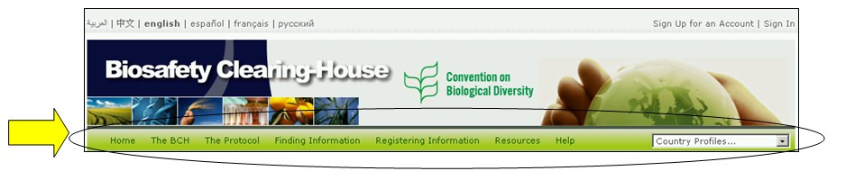
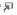

主页欢迎区上面是一排导航工具条，提供了生物安全信息交换所主要组成部分的链接。

图 7
生物安全信息交换所提供了有关生物安全信息交换所的信息、其发展和管理、主要内容和政策的链接。
议定书提供了议定书的案文、议定书缔约方清单、COP-MOP决定、正式报告、会议文件和通知的有关情况。查询信息部分提供了在生物安全信息交换所数据库中对各种信息类型以及与汇编信息（如国家联络点、改性活生物体登记库、亲本生物体登记库和基因登记库搜索界面的链接。
登记信息将用户链接到管理中心的登录页，生物安全信息交换所用户通过该页可创立并管理其信息。
资源提供了其他有关网址资源的接入点，如（一）生物安全信息交换所中使用的统一格式；（二）词汇表，（三）用语汇编；（四）描述促进国家参与的解决方案页面（Hermes 和 BCH Ajax Plug-In），（五）可用的群发邮件清单，（六）可下载的文档列表，和（七）网址路线图。
帮助部分提供了下列功能的接入点：（一）常见问题问答，（二）生物安全信息交换所培训模式，（三）生物安全信息交换所指南，（四）生物安全信息交换所培训网址和（五）可交互操作服务。在导航工具条的右边是查询国家概况的搜索框。这可以迅速搜索并得到所列出的每一个国家的所有记录条。
生物安全信息交换所中央门户网站上的菜单使用图标来说明相关链接的特点。常用的菜单图表如下：
 链接将用户带入另一个网址
链接将用户带入另一个网址
链接到PDF文件
 链接将用户带入另一个网址上的搜索功能
在生物安全信息交换所中央门户网站上的使用的更多图标详情见BCH培训网址上提供的参考手册4指南(https://bchtraining.cbd.int/member/training-signin.aspx?returnurl=%2fdefault.shtml)。